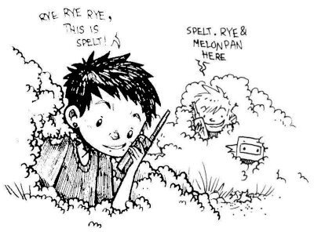

communication

As a sailor, you must offer help to a boat in trouble. Radio communication is key, specific channels are used in every country for emergencies or information exchange. Every morning, sailors will tune in to a specific channel and listen to a morning net, a public radio exchange in which the weather and local events are announced, as well as boats seeking crew, or items that need to be sold or found. When the weather is foul, the local channels are very busy.
There is an unspoken understanding between long-distance sailors, an exchange of looks when foul weather is amidst. Every member of the sailing community knows the difficulties of life at sea, and is ready to lend a hand. We refer to each other by boat name, and like bird-watchers, we can identify rare breeds by sight. When transiting through world routes, we meet the same boats often, thus strengthening the connection. Talking to other sailors, and exchanging information is extremely valuable. You will make friendships for life.
On our 5-year cruise around the Pacific Ocean, we used a satellite phone.
radio
Onboard Pino we carry a fixed marine VHF radio, a handheld VHF and two transceiver Walkie Talkie two-way radios. VHF/UHF radio waves travel in straight lines (line-of-sight) generally cannot travel beyond the horizon. VHF (very high frequency) is the designation for the range of radio frequencies from 30 to 300 megahertz (MHz)
A marine VHF radio is an important and reliable for bidirectional voice communication both for ship-to-ship and ship-to-shore. In Canada, a Restricted Radiotelephone Operator Permit is required to transmit, it is unlawful to operate a ship station that is not licensed. The handheld marine VHF has the same functionalities as the fixed version, but is equipped with DSC(Digital Select Calling).
We sometimes use the two transceiver two-way radios to talk to each other from shore-to-shore, an Amateur Radio License is required to broadcast with this type of radio in Canada. A license ensures that new users are aware of the existing regulations and don't broadcast on reserved frequencies.